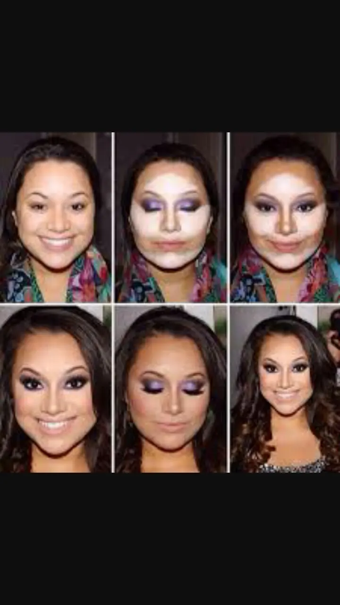
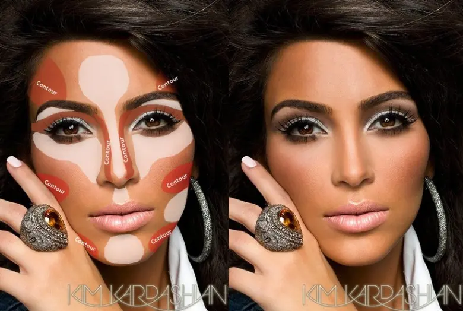
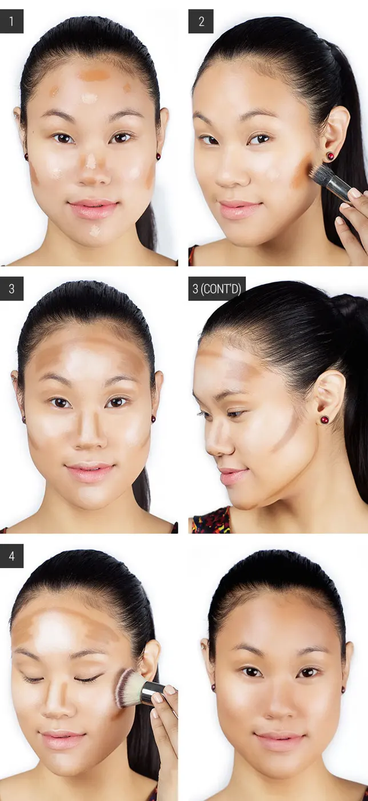
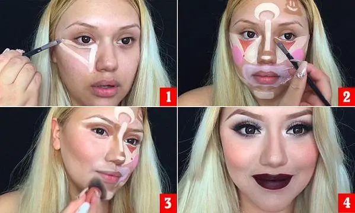
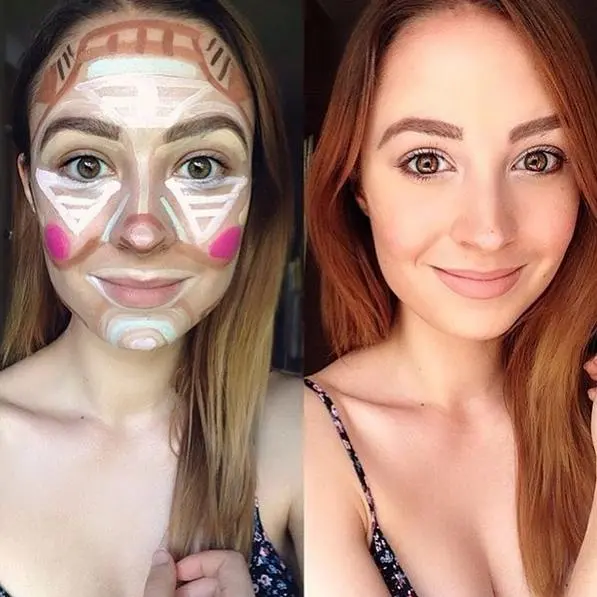
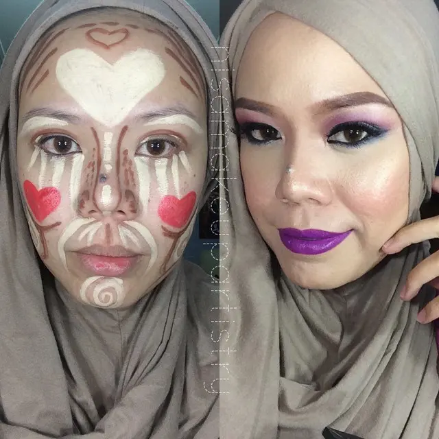

Contouring & Clown Contouring
Salve ragazzeeeee
il caldo e l'afa ci sta massacrando e non ci fa nemmeno aver voglia di usare trucchi e cose varie. .Proprio per questo, per non sparire del tutto da voi a causa del caldo, ho pensato oggi di parlarvi di una tecnica di makeup. .ossia il CONTOURING . .
In realtà vorrei approfondire il nuovo contouring che sta spopolando tra le star e tra le blogger. . Il CLOWN CONTOURING. .
Innanzitutto capiamo cos'è un contouring. .essa è una tecnica professionale di make-up che viene usata dalle MUA soprattutto per modellare e definire il viso, esaltando i punti forti del viso e 'camuffando' i difetti senza bisogno di ricorrere alla chirurgia. .
Con un contouring fatto bene si può assottigliare un naso importante, ma anche sfinare un viso bello tondo. .


Tutto questo, ovviamente se fatto bene, dà un aspetto diverso al viso servendosi di terra, che usando quella scura viene applicata sulle zone del viso che voglia 'nascondere'. .utilizzando invece un buon illuminante, che viene applicato sulle zone che vogliamo evidenziare, si mettono in risalto parti del viso che vogliamo esaltare. .
Naturalmente ogni volto ha un contouring diverso e magari provando più volte si riesce a trovare il contouring ideale per il proprio viso. .
Un conturing base è questo :

Passiamo ora al Clown Contouring. .
È veramente l'ultima trovata in fatto di make-up. .è stata inventata da una Make-up Artist YouTuber BELLI DE LUNE. .
Ciò che ha fatto furore tra tutti i social, che ha portato poi a farlo sperimentare da tutte le YouTuber è stato, non qualche cambiamento nel risultato del semplice contouring ma bensì nella fase della sfumatura. .cioè nell'applicazione di terra, polveri rosa, fondotinta di vari tonalità nom sfumate ovviamente, che fanno sì che si abbia un vero e proprio effetto clown. .
Credo che la cosa per Bella De Lune sia nata per puro divertimento o anche, perché no, per noia. . Ihihihihih
Bella De Lune

È naturale che dopo questo divertente passaggio non bisogna poi sfumare i vari prodotti a casaccio ma che c'è una tecnica precisa che rende i propri lineamenti perfetti. .
Dopo di lei poi c'è stato il tormentone che, come ho già accennato le altre YouTuber hanno provato e vi faccio vedere qualche Clown Contouring. .


Per quanto mi riguarda io non amo in primis il contouring perché credo che mascheri molto il viso e risulta molto pesante per il volto. .
Personalmente non uso nemmeno tanto il fondotinta solo nei casi estremi e quindi non ho mai provato questa tecnica e ne ben meno il clown contouring. .
VOi usate questa tecnica????
E questa nuova tendenza???